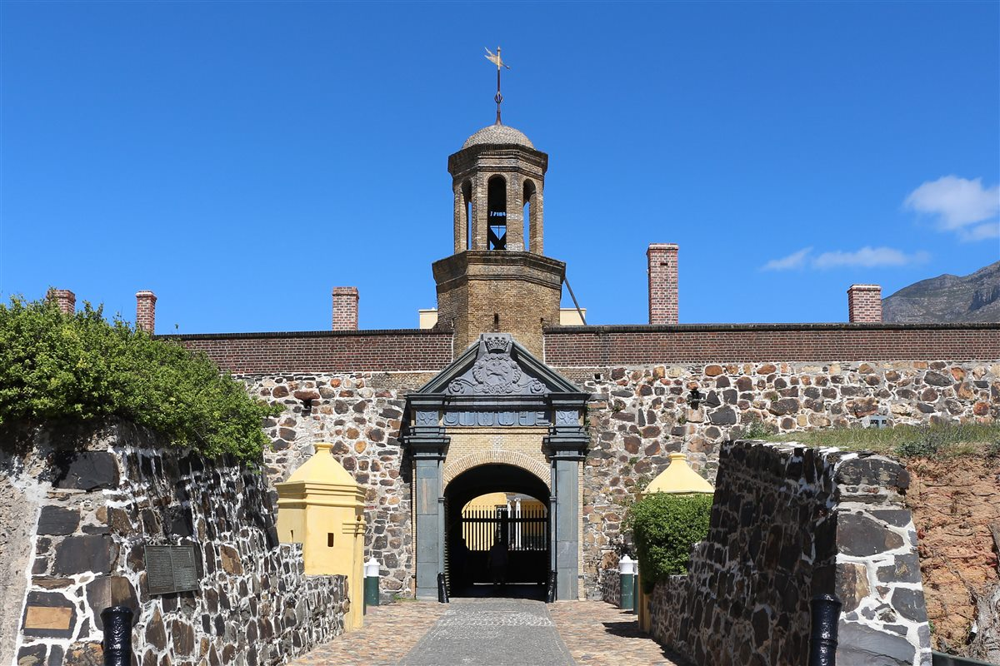

← Back to Africa
South Africa
Explore three historic landmarks from South Africa.
Robben Island
Western Cape
For nearly four centuries, this island off Cape Town served as a place of banishment, a leper colony, and a maximum-security prison for anti-apartheid activists. Nelson Mandela spent 18 of his 27 prison years here; political prisoners forged a vision of democratic, non-racial South Africa.

Castle of Good Hope
Cape Town
Built between 1666 and 1679 by the Dutch East India Company as a maritime replenishment station, this pentagonal bastion is South Africa’s oldest surviving colonial building. Its walls witnessed early clashes between European settlers and indigenous Khoikhoi communities.

Cradle of Humankind
Gauteng
Beneath limestone caves northwest of Johannesburg, paleoanthropologists uncovered some of the oldest and richest hominin fossils ever found, dating back over two million years. This valley connects every human alive today to shared African evolutionary roots.